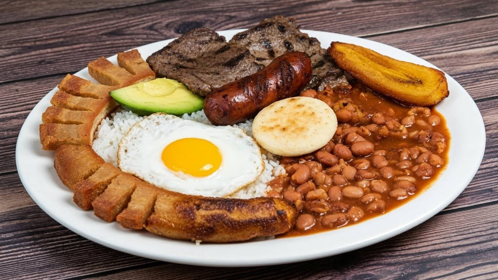

Bandeja paisa
La bandeja paisa es uno de los platos más representativos de Antioquia, Colombia. Es una preparación abundante y tradicional que combina diferentes alimentos como fríjoles, arroz, carne molida, chicharrón, huevo, plátano maduro, aguacate y arepa.
Ingredientes 🍱
- 2 tazas de fríjoles cargamanto
- 2 tazas de arroz blanco
- 500 g de carne molida
- 500 g de chicharrón
- 4 huevos
- 2 plátanos maduros
- 1 aguacate
- 4 arepas
- 1 tomate
- 1 cebolla
- 2 dientes de ajo
- Aceite
- Sal al gusto
- Comino al gusto
- Agua
Preparación 🍴
- Preparar los fríjoles: dejar los fríjoles en remojo desde el día anterior. Luego cocinarlos en agua con sal hasta que estén blandos. Se puede agregar tomate, cebolla y ajo para darles más sabor.
- Preparar el arroz: lavar el arroz y cocinarlo con agua, sal y un poco de aceite hasta que quede suelto y completamente cocido.
- Preparar la carne: sazonar la carne molida con sal, comino, ajo y otros condimentos al gusto. Cocinarla en una sartén hasta que esté bien dorada.
- Preparar el chicharrón: cortar la panceta de cerdo en trozos y cocinarla hasta que quede bien dorada y crujiente.
- Freír los plátanos: cortar los plátanos maduros en trozos y freírlos en aceite caliente hasta que estén dorados.
- Preparar los huevos: freír los huevos en una sartén con un poco de aceite, procurando que la yema quede al gusto.
- Calentar las arepas: cocinar las arepas en una plancha o sartén hasta que estén calientes y ligeramente doradas.
- Servir: colocar en un plato una porción de fríjoles, arroz, carne molida, chicharrón, huevo, plátano maduro y arepa. Acompañar con aguacate y servir caliente.
Video demostrativo 🧑💻
Cómo preparar la bandeja paisa